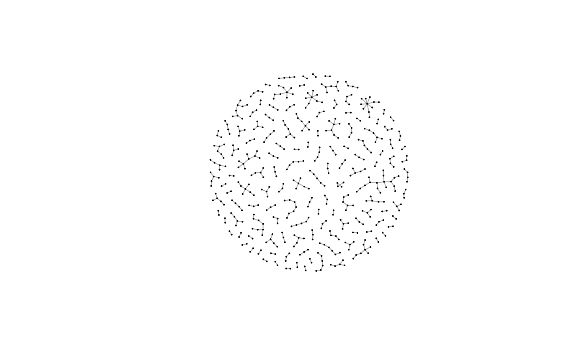
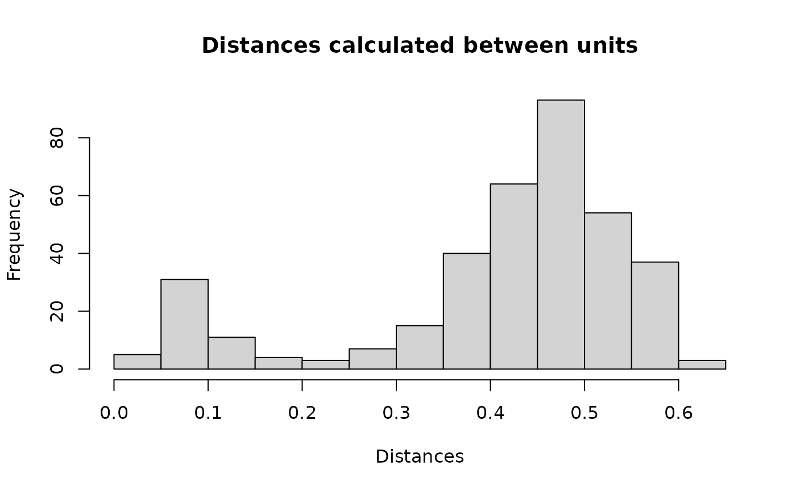

Blocking records for deduplication
Maciej Beręsewicz
Source:vignettes/v1-deduplication.Rmd
v1-deduplication.RmdSetup
Read required packages.
Read the RLdata500 data (taken from the RecordLinkage
package).
data(RLdata500)
head(RLdata500)
#> fname_c1 fname_c2 lname_c1 lname_c2 by bm bd rec_id ent_id
#> <char> <char> <char> <char> <int> <int> <int> <int> <int>
#> 1: CARSTEN <NA> MEIER <NA> 1949 7 22 1 34
#> 2: GERD <NA> BAUER <NA> 1968 7 27 2 51
#> 3: ROBERT <NA> HARTMANN <NA> 1930 4 30 3 115
#> 4: STEFAN <NA> WOLFF <NA> 1957 9 2 4 189
#> 5: RALF <NA> KRUEGER <NA> 1966 1 13 5 72
#> 6: JUERGEN <NA> FRANKE <NA> 1929 7 4 6 142This dataset contains 500 rows with 450 entities.
Blocking for deduplication
Now we create a new column that concatenates the information in each row.
RLdata500[, id_count :=.N, ent_id] ## how many times given unit occurs
RLdata500[is.na(fname_c2), fname_c2:=""]
RLdata500[is.na(lname_c2), lname_c2:=""]
RLdata500[, bm:=sprintf("%02d", bm)] ## add leading zeros to month
RLdata500[, bd:=sprintf("%02d", bd)] ## add leading zeros to month
RLdata500[, txt:=tolower(paste0(fname_c1,fname_c2,lname_c1,lname_c2,by,bm,bd))]
head(RLdata500)
#> fname_c1 fname_c2 lname_c1 lname_c2 by bm bd rec_id ent_id
#> <char> <char> <char> <char> <int> <char> <char> <int> <int>
#> 1: CARSTEN MEIER 1949 07 22 1 34
#> 2: GERD BAUER 1968 07 27 2 51
#> 3: ROBERT HARTMANN 1930 04 30 3 115
#> 4: STEFAN WOLFF 1957 09 02 4 189
#> 5: RALF KRUEGER 1966 01 13 5 72
#> 6: JUERGEN FRANKE 1929 07 04 6 142
#> id_count txt
#> <int> <char>
#> 1: 1 carstenmeier19490722
#> 2: 2 gerdbauer19680727
#> 3: 1 roberthartmann19300430
#> 4: 1 stefanwolff19570902
#> 5: 1 ralfkrueger19660113
#> 6: 1 juergenfranke19290704In the next step we use the newly created column in the
blocking function. If we specify verbose, we get
information about the progress.
set.seed(2024)
df_blocks <- blocking(x = RLdata500$txt, ann = "nnd", verbose = 1, graph = TRUE)
#> ===== creating tokens =====
#> ===== starting search (nnd, x, y: 500, 500, t: 429) =====
#> ===== creating graph =====Results are as follows:
- based on
rnndescentwe have created 133 blocks, - it was based on 429 columns (2 character shingles),
- we have 45 blocks of 2 elements, 33 blocks of 3 elements, …, 1 block of 17 elements.
df_blocks
#> ========================================================
#> Blocking based on the nnd method.
#> Number of blocks: 133.
#> Number of columns used for blocking: 429.
#> Reduction ratio: 0.9919.
#> ========================================================
#> Distribution of the size of the blocks:
#> 2 3 4 5 6 7 8 9 11 17
#> 45 33 21 14 7 4 4 3 1 1Structure of the object is as follows:
-
result– adata.tablewith identifiers and block IDs, -
method– the method used, -
deduplication– whether deduplication was applied, -
representation– whether shingles or vectors were used, -
metrics– standard metrics and based on theigraph::comparemethods for comparing graphs (here NULL), -
confusion– confusion matrix (here NULL), -
colnames– column names used for the comparison, -
graph– anigraphobject mainly for visualisation.
str(df_blocks,1)
#> List of 8
#> $ result :Classes 'data.table' and 'data.frame': 367 obs. of 4 variables:
#> ..- attr(*, ".internal.selfref")=<externalptr>
#> $ method : chr "nnd"
#> $ deduplication : logi TRUE
#> $ representation: chr "shingles"
#> $ metrics : NULL
#> $ confusion : NULL
#> $ colnames : chr [1:429] "86" "ap" "av" "bf" ...
#> $ graph :Class 'igraph' hidden list of 10
#> - attr(*, "class")= chr "blocking"Plot connections.
plot(df_blocks$graph, vertex.size=1, vertex.label = NA)
The resulting data.table has four columns:
-
x– reference dataset (i.e.RLdata500) – this may not contain all units ofRLdata500, -
y- query (each row ofRLdata500) – this may not contain all units ofRLdata500, -
block– the block ID, -
dist– distance between objects.
head(df_blocks$result)
#> x y block dist
#> <int> <int> <num> <num>
#> 1: 1 64 34 0.47379869
#> 2: 2 43 1 0.08074528
#> 3: 2 486 1 0.41023219
#> 4: 3 450 89 0.43263352
#> 5: 4 234 12 0.52565837
#> 6: 5 128 2 0.51333570Create long data.table with information on blocks and
units from original dataset.
df_block_melted <- melt(df_blocks$result, id.vars = c("block", "dist"))
df_block_melted_rec_block <- unique(df_block_melted[, .(rec_id=value, block)])
head(df_block_melted_rec_block)
#> rec_id block
#> <int> <num>
#> 1: 1 34
#> 2: 2 1
#> 3: 3 89
#> 4: 4 12
#> 5: 5 2
#> 6: 6 34We add block information to the final dataset.
RLdata500[df_block_melted_rec_block, on = "rec_id", block_id := i.block]
head(RLdata500)
#> fname_c1 fname_c2 lname_c1 lname_c2 by bm bd rec_id ent_id
#> <char> <char> <char> <char> <int> <char> <char> <int> <int>
#> 1: CARSTEN MEIER 1949 07 22 1 34
#> 2: GERD BAUER 1968 07 27 2 51
#> 3: ROBERT HARTMANN 1930 04 30 3 115
#> 4: STEFAN WOLFF 1957 09 02 4 189
#> 5: RALF KRUEGER 1966 01 13 5 72
#> 6: JUERGEN FRANKE 1929 07 04 6 142
#> id_count txt block_id
#> <int> <char> <num>
#> 1: 1 carstenmeier19490722 34
#> 2: 2 gerdbauer19680727 1
#> 3: 1 roberthartmann19300430 89
#> 4: 1 stefanwolff19570902 12
#> 5: 1 ralfkrueger19660113 2
#> 6: 1 juergenfranke19290704 34We can check in how many blocks the same entities
(ent_id) are observed. In our example, all the same
entities are in the same blocks.
RLdata500[, .(uniq_blocks = uniqueN(block_id)), .(ent_id)][, .N, uniq_blocks]
#> uniq_blocks N
#> <int> <int>
#> 1: 1 450We can visualise the distances between units stored in the
df_blocks$result data set. Clearly we have a mixture of two
groups: matches (close to 0) and non-matches (close to 1).
hist(df_blocks$result$dist, xlab = "Distances", ylab = "Frequency", breaks = "fd",
main = "Distances calculated between units")
Finally, we can visualise the result based on the information whether block contains matches or not.
df_for_density <- copy(df_block_melted[block %in% RLdata500$block_id])
df_for_density[, match:= block %in% RLdata500[id_count == 2]$block_id]
plot(density(df_for_density[match==FALSE]$dist), col = "blue", xlim = c(0, 0.8),
main = "Distribution of distances between\nclusters type (match=red, non-match=blue)")
lines(density(df_for_density[match==TRUE]$dist), col = "red", xlim = c(0, 0.8))